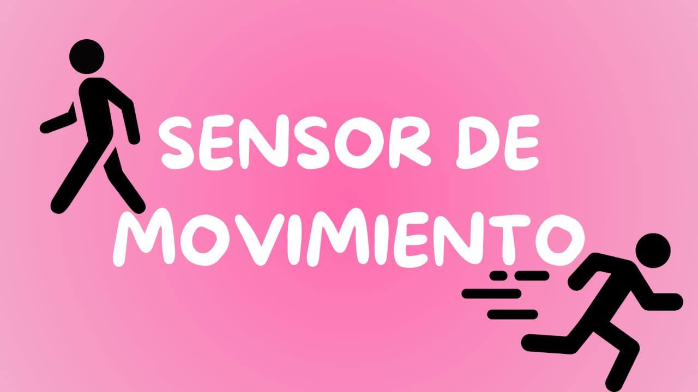
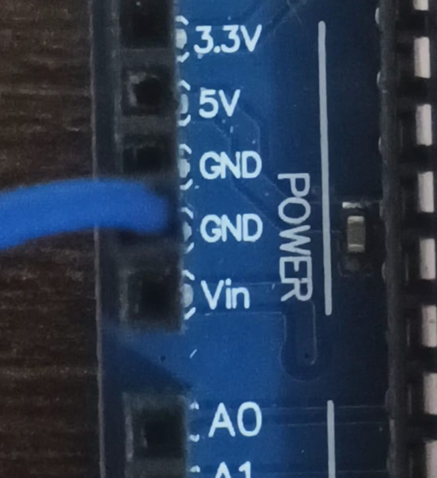
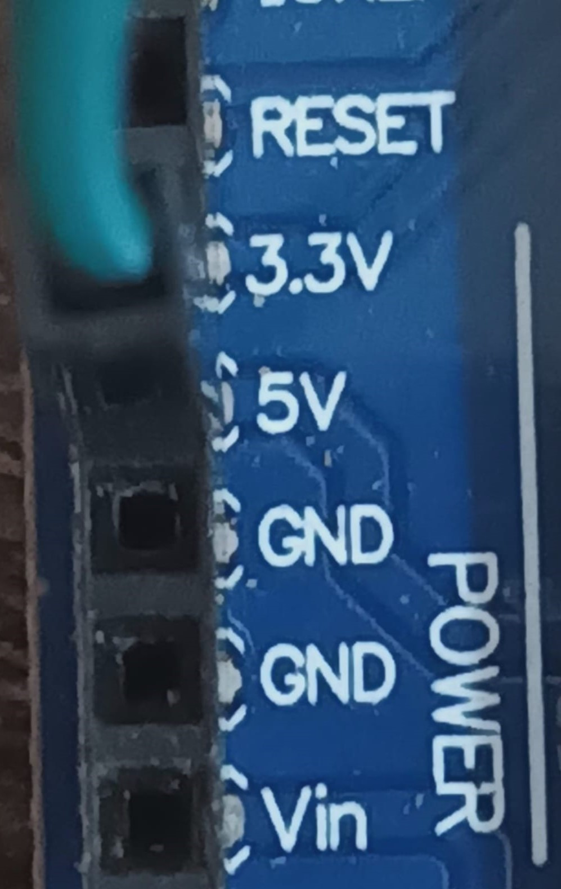
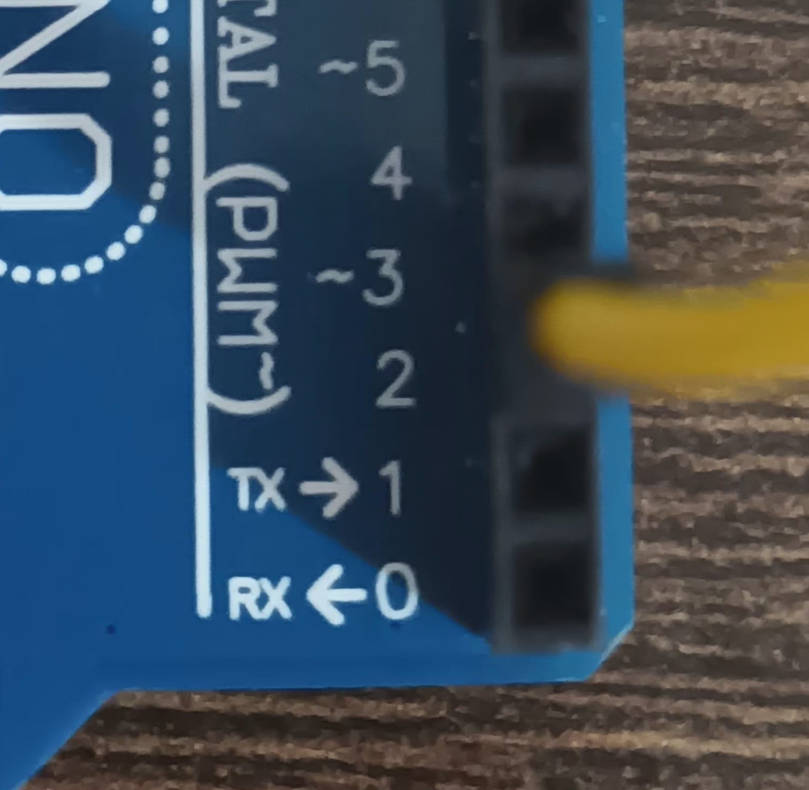

SISTEMA DE GESTION DE PRESENCIA
Un sensor PIR para Arduino es un sensor infrarrojo pasivo (PIR), que detecta el movimiento de objetos que emiten
calor, a partir de los cambios en la radiación infrarroja del ambiente. Se utiliza para proyectos de automatización
que activan una respuesta al detectar movimiento, por ejemplo, activar luces, alarmas, cámaras o cualquier otro dispositivo.
Se conecta fácilmente a placas Arduino con tres pines, ofreciendo una señal
de salida digital que indica si hay movimiento o no.

La conexión GND, que significa tierra (Ground), es un punto de referencia de voltaje cero en un circuito eléctrico y también actúa como una ruta de retorno para la corriente. Su función principal es asegurar que el circuito funcione correctamente, de forma estable y segura.

Una conexión de 5V se refiere a un voltaje de corriente continua de 5 voltios, se utiliza para alimentar diferentes dispositivos electronicos como placas de microcontroladores, como Arduino.

Los pines digitales de Arduino son los puertos de conexión en la placa que permiten enviar y recibir señales digitales, es decir, con dos estados: ALTO y BAJO. El pin digital del Arduino actúa como un interruptor que recibe del sensor una orden simple: hay movimiento o no hay